Hierarchical Clustering#
# Imports
import sys, os
ex_path = os.path.abspath(os.pardir)
if ex_path not in sys.path:
sys.path.append(ex_path)
from src.hier_example import *
from sklearn.datasets import make_blobs
from src.av_link_agglom_clust import centrAggClust as ac
import numpy as np
import pandas as pd
import matplotlib.pyplot as plt
from scipy.cluster.hierarchy import dendrogram, linkage, cophenet
from scipy.spatial.distance import pdist
from sklearn.datasets import make_blobs, make_moons, load_iris
from sklearn.cluster import AgglomerativeClustering
from sklearn.neighbors import KernelDensity
from sklearn.metrics import silhouette_score
%matplotlib inline
Agenda#
SWBAT:
describe the algorithms of agglomerative and divisive hierarchical clustering;
compare and contrast hierarchical clustering with \(k\)-means clustering;
implement hierarchical clustering with
scipyandsklearn;build and interpret dendrograms.
Intuition Behind Agglomerative Clustering#
Let’s draw some data points!
Scenario#
You worked on creating market segmentation groups using kmeans on customer shopping records, but you’re not sure kmeans was the best method. By the end of this lesson, you want to find the appropriate number of groups and their descriptions.
Hierarchical Agglomerative Clustering#
Recall \(k\)-means clustering where the goal is to assign individual observations to a pre-specified number of clusters according to Euclidean distance between the centroid and the observation. Hierarchical clustering sets out to group the most similar two observations together from a bottom-up level. We end up with a tree-like diagram called a dendrogram, which allows us to view the clusterings obtained for each possible number of clusters, from 1 to n. It is up to our discretion as data scientists to decide how many clusters we want.
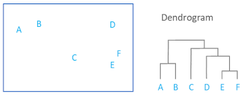
One disadvantage of \(k\)-means clustering is that we have to specify the number of clusters beforehand. The type of hierchical clustering we will learn today is agglomerative, or bottom-up, such that we do not have to specify the number of clusters beforehand. We will now dive into the details of hierchical clustering.
There is also top-down or divisive clustering, where one starts with the entire dataset as a single cluster.
How does the algorithm work#
Initially, every observation is its own cluster. As we move up the leaf of the dendrogram, the two most similar observations fuse together, and then the next most similar clusters fuse together etc. until everything fuses together into a big cluster. Where to stop is up to our discretion.
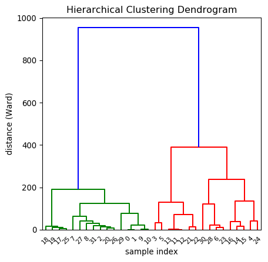
Agglomerative example#
plot_agglomerative_algorithm()
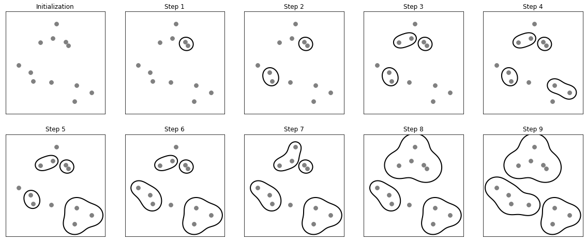
Types of hierarchical agglomerative clustering#
The way that distance is measured between clusters is called the model’s linkage.
Single Linkage
Minimum pair-wise distance: for any two clusters, take one observation from each and determine their distance. Do this over and over, until you have identified the overall minimum pair-wise distance.
Complete Linkage
Complete linkage may be defined as the furthest (or maximum) distance between two clusters. That is, all possible pairwise distances between elements (one from cluster A and one from B) are evaluated and the largest value is used as the distance between clusters A & B. This is sometimes called complete linkage and is also called furthest neighbor.
Average Linkage
The distance between clusters is defined as the average distance between the data points in the clusters.
Ward Linkage
Ward method finds the pair of clusters that leads to minimum increase in total within-cluster variance after merging at each step.
This article describes the pros and cons of each approach.
How well does the dendrogram fit the data?#
One way of computing this is by means of the cophenetic correlation coefficient, which, in a word, is a measure of “how faithfully the dendrogram preserves the pairwise distances between the [datapoints]” – Wikipedia.
The cophenetic correlation coefficient \(c\) is given by ref
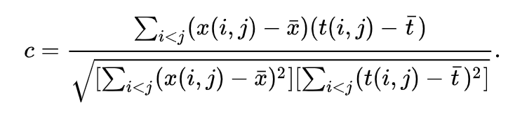
\(x(i, j) = | Xi − Xj |\), the ordinary Euclidean distance between the \(i\)th and \(j\)th observations.
\(t(i, j)\) = the dendrogrammatic distance between the model points \(Ti\) and \(Tj\). This distance is the height of the node at which these two points are first joined together.
Then, letting \({\bar {x}}\) be the average of the \(x(i, j)\), and letting \({\bar {t}}\) be the average of the \(t(i, j)\), the cophenetic correlation coefficient \(c\) is given by[4]
This is complicated! This site is helpful on how to understand the cophenetic correlation, and, indeed, on hierarchical clustering generally.
Seeing it in action#
This post here walks through cluster assignment step by step.
X, Y = make_blobs(n_samples=10, n_features=1,
centers=5, random_state=42)
ac(X, Y)
/Users/jamesirving/Documents/GitHub/_COHORT_NOTES/my-best-lessons-and-code-jmi/Phase_4/topic_34_clustering/ds-clustering-main/src/av_link_agglom_clust.py:46: VisibleDeprecationWarning: Creating an ndarray from ragged nested sequences (which is a list-or-tuple of lists-or-tuples-or ndarrays with different lengths or shapes) is deprecated. If you meant to do this, you must specify 'dtype=object' when creating the ndarray
arr_clust1 = np.array(clusts[clust1])
/Users/jamesirving/Documents/GitHub/_COHORT_NOTES/my-best-lessons-and-code-jmi/Phase_4/topic_34_clustering/ds-clustering-main/src/av_link_agglom_clust.py:50: VisibleDeprecationWarning: Creating an ndarray from ragged nested sequences (which is a list-or-tuple of lists-or-tuples-or ndarrays with different lengths or shapes) is deprecated. If you meant to do this, you must specify 'dtype=object' when creating the ndarray
arr_clust2 = np.array(clusts[clust2])
/Users/jamesirving/Documents/GitHub/_COHORT_NOTES/my-best-lessons-and-code-jmi/Phase_4/topic_34_clustering/ds-clustering-main/src/av_link_agglom_clust.py:80: VisibleDeprecationWarning: Creating an ndarray from ragged nested sequences (which is a list-or-tuple of lists-or-tuples-or ndarrays with different lengths or shapes) is deprecated. If you meant to do this, you must specify 'dtype=object' when creating the ndarray
ax[p_row, p_col].scatter(np.array(clust)[:, 0], np.array(clust)[:, 1])
3
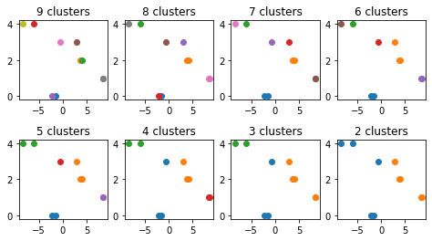
X2 = [1, 2, 5, 7, 9]
Y2 = [2, 2, 8, 2, 2]
ac(X2, Y2)
3
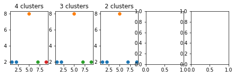
Meanwhile, we can do it in scipy and sklearn
Hierarchical clustering with scipy#
# Let's generate some data and look at an example of
# hierarchical agglomerative clustering.
# Generate two clusters: a with 100 points, b with 50:
np.random.seed(1000)
a = np.random.multivariate_normal([10, 0], [[3, 1], [1, 4]], size=[100,])
b = np.random.multivariate_normal([0, 20], [[3, 1], [1, 4]], size=[50,])
X = np.concatenate((a, b))
print(X.shape) # 150 samples with 2 dimensions
fig, ax = plt.subplots()
ax.scatter(X[:, 0], X[:, 1])
ax.set_title("Sample data for clustering demo");
(150, 2)
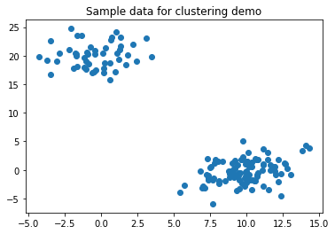
# construct dendrogram in scipy
Z = linkage(X, 'single')
Z.shape
(149, 4)
Z[:5, :]
array([[4.00000000e+00, 9.20000000e+01, 2.96678503e-02, 2.00000000e+00],
[7.00000000e+01, 9.10000000e+01, 6.04706721e-02, 2.00000000e+00],
[4.40000000e+01, 7.90000000e+01, 6.86073680e-02, 2.00000000e+00],
[5.00000000e+00, 8.90000000e+01, 7.13464569e-02, 2.00000000e+00],
[5.30000000e+01, 7.50000000e+01, 8.37051268e-02, 2.00000000e+00]])
Z contains the dendrogram in coded form! Its third column has distances. https://docs.scipy.org/doc/scipy/reference/generated/scipy.cluster.hierarchy.linkage.html
pdist() calculates pairwise distances for an input array of points.
X[:3, :]
array([[ 9.51248139, -1.73096401],
[10.81711837, -0.56938319],
[10.17149359, -0.86587806]])
print(((X[0, 0] - X[1, 0])**2 + (X[0, 1] - X[1, 1])**2)**0.5)
print(((X[0, 0] - X[2, 0])**2 + (X[0, 1] - X[2, 1])**2)**0.5)
print(((X[0, 0] - X[3, 0])**2 + (X[0, 1] - X[3, 1])**2)**0.5)
1.7468107108136453
1.0875066748278823
1.9420514090392513
pdist(X)[:3]
array([1.74681071, 1.08750667, 1.94205141])
len(X)
150
len(pdist(X))
11175
# For each point, there are 149 distances
# to other points.
150*149 // 2
11175
c, coph_dists = cophenet(Z, pdist(X))
c
0.9786391269542297
coph_dists[:5]
array([0.59994881, 0.49632455, 0.544156 , 0.6004741 , 0.6004741 ])
# calculate and construct the dendrogram
# calculate full dendrogram
fig, ax = plt.subplots(figsize=(25, 10))
ax.set_title('Hierarchical Clustering Dendrogram')
ax.set_xlabel('sample index')
ax.set_ylabel('distance')
dendrogram(
Z,
leaf_rotation=90., # rotates the x axis labels
leaf_font_size=8., # font size for the x axis labels
);
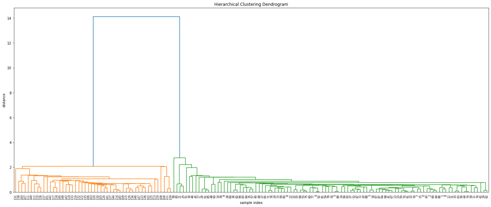
# trimming and truncating the dendrogram
fig, ax = plt.subplots()
ax.set_title('Hierarchical Clustering Dendrogram (truncated)')
ax.set_xlabel('sample index')
ax.set_ylabel('distance')
dendrogram(
Z,
truncate_mode='lastp', # show only the last p merged clusters
p=6,
show_leaf_counts=False, # otherwise numbers in brackets are counts
leaf_rotation=90.,
leaf_font_size=12.,
show_contracted=True # to get a distribution impression in
#truncated branches
);
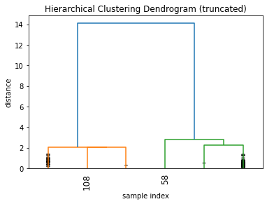
Hierarchical clustering with sklearn on Iris#
Documentation for AgglomerativeClustering in sklearn
A great example of using Manhattan distance with agglomerative clustering in sklearn.
# we can also use the scikitlearn module hierarchical clustering
# to perform the same task
np.random.seed(2000)
# try clustering on the iris dataset
iris = load_iris()
# in this case, we won't be working with predicting labels,
# so we will only use the features (X)
X_iris = iris.data
y_iris = iris.target
fig, ax = plt.subplots()
ax.scatter(X_iris[:, 1], X_iris[:, 3], c=y_iris);
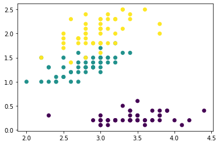
# Comparing our clusters with truth. Note that we are fitting our
# model to ALL the columns but only plotting two of them!
iris_cluster = AgglomerativeClustering(n_clusters=3)
iris_cluster
AgglomerativeClustering(n_clusters=3)
pred_iris_clust = iris_cluster.fit_predict(X_iris)
fig, ax = plt.subplots(1, 2, figsize=(10, 5))
ax[0].scatter(X_iris[:, 1], X_iris[:, 3],
c=y_iris)
ax[1].scatter(X_iris[:, 1], X_iris[:, 3],
c=pred_iris_clust);
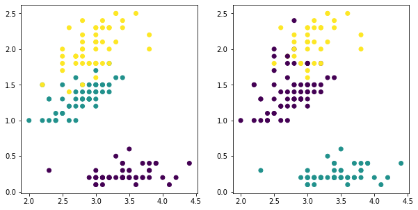
def switch(x):
if x == 1:
return 0
elif x == 0:
return 1
else:
return x
pred_iris_clust = iris_cluster.fit_predict(X_iris)
fig, ax = plt.subplots(1, 2, figsize=(10, 5))
ax[0].scatter(X_iris[:, 1], X_iris[:, 3],
c=y_iris)
ax[1].scatter(X_iris[:, 1], X_iris[:, 3],
c=list(map(switch, pred_iris_clust)));
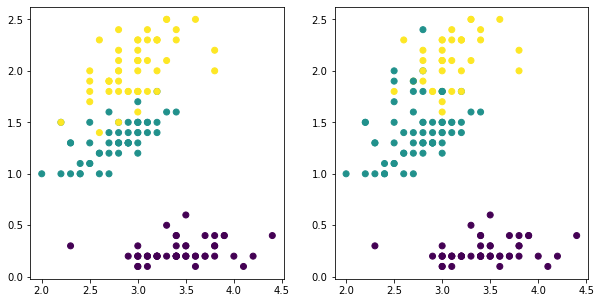
Evaluate#
To evaluate you might try different numbers of clusters and compare their silhouette score as you did with kmeans.
# evaluation: silhouette score
silhouette_score(X_iris, pred_iris_clust)
0.5543236611296415
Evaluating number of clusters / Cut points#
For hierarchical agglomerative clustering, or clustering in general, it is generally difficult to truly evaluate the results. Therefore, it is up you, the data scientists, to decide.
Stanford has a good explanation on page 380 of your options for picking the cut-off.
When we are viewing dendrograms for hierarchical agglomerative clustering, we can visually examine where the natural cutoff is, despite it not sounding exactly statistical, or scientific. We might want to interpret the clusters and assign meanings to them depending on domain-specific knowledge and shape of dendrogram. However, we can evaluate the quality of our clusters using measurements such as Sihouette score discussed in the k-means lectures.
Advantages & Disadvantages of hierarchical clustering#
Advantages#
Intuitive and easy to implement
More informative than k-means because it takes individual relationship into consideration
Allows us to look at dendrogram and decide number of clusters
Disadvantages#
Very sensitive to outliers
Cannot undo the previous merge, which might lead to problems later on